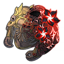

추천 광추
고민, 그리고 행복
추가 공격 피해와 표식의 치명타 피해 지원
효과 자세히
치명타 확률 +18%, 추가 공격 피해 +30%. 추가 공격이 부여한 온순 스택당 아군 치명타 피해 +12%(최대 2스택).
순수 사유의 세례
디버프와 필살기·추가 공격 시너지
효과 자세히
치명타 피해 +20%, 적 디버프당 +8%(최대 3스택). 필살기 명중 후 피해 +36%·추가 공격 방어력 24% 무시(2턴).
논검
사냥감 한 대상에 누적 피해
효과 자세히
동일한 적을 여러 회 명중 후 매번 가하는 피해가 16% 증가. 해당 효과 최대 중첩수: 5스택. 공격 목표에 변화가 생길 경우 현재 버프 효과가 해제된다
별바다 순항
치명타 확률 보강
효과 자세히
치명타 확률이 16% 증가. 장착한 캐릭터는 HP 백분율이 50% 이하인 적에게 가하는 치명타 확률이 추가로 16% 증가. 장착한 캐릭터는 적을 처치한 후 공격력이 40% 증가. 지속 2턴
추천 유물
사수에 잠수한 선구자 4 · 질주하는 늑대의 도람 왕조 2
- 머리
 주옵션HP부옵션치명타 확률 · 치명타 피해 · 공격력% · 속도
주옵션HP부옵션치명타 확률 · 치명타 피해 · 공격력% · 속도 - 손
 주옵션공격력부옵션치명타 확률 · 치명타 피해 · 공격력% · 속도
주옵션공격력부옵션치명타 확률 · 치명타 피해 · 공격력% · 속도 - 몸통

주옵션치명타 확률 / 치명타 피해부옵션치명타 확률 (주옵션 제외) · 치명타 피해 (주옵션 제외) · 공격력% · 속도 - 다리
 주옵션공격력%부옵션치명타 확률 · 치명타 피해 · 속도
주옵션공격력%부옵션치명타 확률 · 치명타 피해 · 속도 - 구체
 주옵션번개 피해 증가부옵션치명타 확률 · 치명타 피해 · 공격력% · 속도
주옵션번개 피해 증가부옵션치명타 확률 · 치명타 피해 · 공격력% · 속도 - 매듭
 주옵션공격력%부옵션치명타 확률 · 치명타 피해 · 속도
주옵션공격력%부옵션치명타 확률 · 치명타 피해 · 속도
이 조합을 추천하는 이유
번개 피해 구체를 착용해 추가 공격 피해를 높입니다.
사수에 잠수한 선구자 4 · 질주하는 늑대의 도람 왕조 2
- 머리
주옵션HP부옵션치명타 확률 · 치명타 피해 · 공격력% · 속도
- 손
주옵션공격력부옵션치명타 확률 · 치명타 피해 · 공격력% · 속도
- 몸통 주옵션치명타 확률 / 치명타 피해부옵션치명타 확률 (주옵션 제외) · 치명타 피해 (주옵션 제외) · 공격력% · 속도
- 다리
주옵션공격력%부옵션치명타 확률 · 치명타 피해 · 속도
- 구체
주옵션공격력%부옵션치명타 확률 · 치명타 피해 · 속도
- 매듭
주옵션공격력%부옵션치명타 확률 · 치명타 피해 · 속도
이 조합을 추천하는 이유
공격력 구체를 착용했을 때의 목표 수치를 적용합니다.
사수에 잠수한 선구자 4 · 질주하는 늑대의 도람 왕조 2
- 머리
주옵션HP부옵션치명타 확률 · 치명타 피해 · 공격력% · 속도
- 손
주옵션공격력부옵션치명타 확률 · 치명타 피해 · 공격력% · 속도
- 몸통 주옵션치명타 확률 / 치명타 피해부옵션치명타 확률 (주옵션 제외) · 치명타 피해 (주옵션 제외) · 공격력% · 속도
- 다리
주옵션공격력%부옵션치명타 확률 · 치명타 피해 · 속도
- 구체
주옵션번개 피해 증가부옵션치명타 확률 · 치명타 피해 · 공격력% · 속도
- 매듭
주옵션공격력%부옵션치명타 확률 · 치명타 피해 · 속도
이 조합을 추천하는 이유
선구자 → 디버프 수에 따른 치명타 피해. 도람 → 아군 추가 공격이 쌓일수록 자신의 추가 공격 피해 증가.
이 정도면 잘 키웠다
선택한 세팅 기준 · —는 확인된 수치 없음
번개 피해 구체를 사용하는 4.7 추가 공격 세팅입니다.
| 스탯 | 추천 스탯 | 준종결 | 종결 |
|---|---|---|---|
| 공격력 | 2700 | — | — |
| 치명타 확률 | 100% | — | — |
| 치명타 피해 | 100% | — | — |
공격력 구체를 사용할 때의 4.7 수치입니다.
| 스탯 | 추천 스탯 | 준종결 | 종결 |
|---|---|---|---|
| 공격력 | 3000 | — | — |
| 치명타 확률 | 100% | — | — |
| 치명타 피해 | 100% | — | — |
가이드에서 권장과 종결을 함께 제시한 별도 옵션입니다.
| 스탯 | 추천 스탯 | 준종결 | 종결 |
|---|---|---|---|
| 공격력 | 2500 | — | 2700+ |
| 치명타 확률 | 80% | — | 90% |
| 치명타 피해 | 100% | — | 120% |
성혼과 추천 돌파
성혼 2가 사냥감 대상의 파티 치명타 피해를 크게 높입니다. 성혼 1은 첫 필살기와 유지에 도움을 줍니다.
1전투 시작 에너지 +20pt·특성 추가 피해당 +2pt
전투 진입 후 맥택은 에너지를 20pt 회복. 특성의 추가 피해를 1회 발동할 때마다 맥택은 에너지를 2pt 회복
2사냥감 대상 아군 치명타 피해 +40%추천
모든 아군이 사냥감이 된 적에게 피해를 가할 시 치명타 피해가 40% 증가
3필살기 +2 · 특성 +2
필살기 +2 · 특성 +2
4필살기 후 자신의 피해 +30%(2턴)
필살기 발동 시 맥택이 가하는 피해가 30.0% 증가. 지속 2턴
5전투 스킬 +2 · 일반 공격 +1
전투 스킬 +2 · 일반 공격 +1
6특성 추가 공격 배율 +25%p
특성의 추가 공격 피해 배율이 25% 증가
추천 파티


기본 운영과 행적
기본 운영
가장 오래 남을 적에게 사냥감을 지정하세요. 맥택이 이탈 중 직접 포인트를 만들 수 없으므로 지정 전에 파티의 포인트를 확보하세요.
행적 우선순위
특성 > 필살기 > 전투 스킬 > 일반 공격. 사냥감 대상이 받는 추가 공격 피해를 높이는 행적을 해금하세요.
아하 속도 계산기 →기준과 출처 · 2026-11-27
4.7 · 한국어 게임 데이터 및 Prydwen 육성 분석